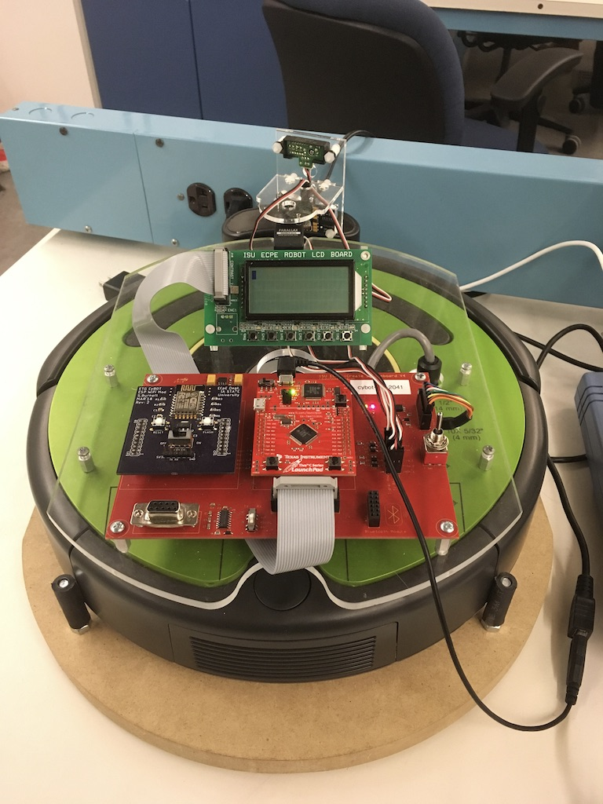

For this project I worked with a partner to design a five-stage pipelined MIPS processor in VHDL. The top-level structure connects these components: program counter, instruction memory, register file, control unit, ALU control logic, ALU, data memory, and pipeline registers. Throughout an entire semester we to design these components and connect them together to support MIPS instrctuions including: R-type arithmetic and logic instructions, branches, jumps, and memory operations. An instruction-load mode allows instructions to be written into the instruction memory for simulation and testing. Instruction fetch logic computes PC+4 and supports branch and jump target calculation. Control unit gives signals from the opcode and function fields. The ALU carries out arithmetic, logic, and shift operations and supports branch logic. Memory completes read and write operations and updates register file accordlingly.
Design of the components was split between me and my partner. I completed the entiriety of the code linked below for the top-level structure of MIPS processor. A lot of the time I spent on this project was debugging this file, and making sure every single instruction worked. I went through each instruction in order and tested them for various end cases. The hardest part was finding the source of an error. I would sometimes have to read the waveforms of the inputs and outputs of every single component to find the problem. We first made a single cycle MIPS processor, but later I had redesign code to support Instruction Fetch, Instruction Decode, Execute, Memory Access, and Write Back stages. Working on the top-level structure helped me have a more complete understanding of how a MIPS processor works. I needed to understand the path of each instruction through the processor, and determine the expected output for each component.
Since vhd files can be difficult to open here is the top level structure for my MIPS project. It shows connections between differant components in our MIPS processor.
MIPS Project
I wanted to be able to display books I have downloaded as pdfs in a more readable way. This site takes a pdf file uploaded by a user, and stores in a cloud storage service. On the homepage, I get each pdf file in storage and render the cover. Clicking on a cover will render the book for the user. Two pages are placed side by side and can be navigated through table of context or the navigation bar.
I completed the entierity of the code as a personal project. I used PDF.js library to render each pdf to appear more like an open book. I used Render and CloudfareR2 for the backend and storage system. I needed to learn how to set up and use cloud object storage, and how to create a server to handle requests for retrieving files from cloud storage. I am continuing to develop the style of the page and increase the readability of the pdfs.
Here is the link for the website. I only used services I could get for free which means it will take a minute for things to load.
Pdf Renderer
Here are links to the frontend and backend code for the site posted on github.
Frontend Backend

Programed and designed functions on microcontroller to make semi-autonomous vehicle that can navigate obstacles, detect edges or drops, and arrive at certain location. Our device was iRobot Roomba that had a Tiva_TM4C123GH6PM processor and a ARM Cortex M4 based microcontroller. For our final project we needed to navigate robot through obstacles using data from on-board sensor to desired location. We were unable to see robots location or field so could only use data from PING and IR sensor to detect and avoid objects. We operated robot over Wifi using Putty and developed GUI to interpret sensor data and pinpoint objects on map.
Throughout this project, I collaborated with a partner to develop embedded C modules for a semi-autonomous system, including LCD text display, motion control, timer management, button input handling, UART communication, interrupt handling, and sensor integration. I contributed primarily to implementing and refining PING sensor data processing for accurate object detection. In the final phase, our team expanded to four members and developed a graphical user interface (GUI) to present sensor data in a more user-friendly format. The GUI enabled real-time field scanning, object localization, and remote command input for navigation. I was responsible for debugging and improving object detection accuracy to ensure reliable and efficient navigation through the course. Additionally, I implemented functionality for the CyBot to play a song upon reaching its destination. During the final demonstration, our system successfully avoided obstacles and autonomously navigated to the target location.
Here are some videos I took when we were developing Cybot.